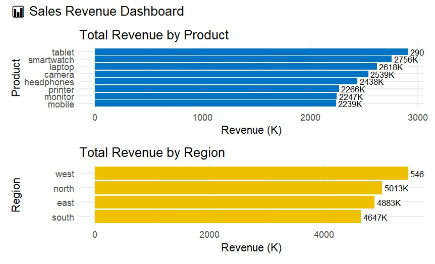
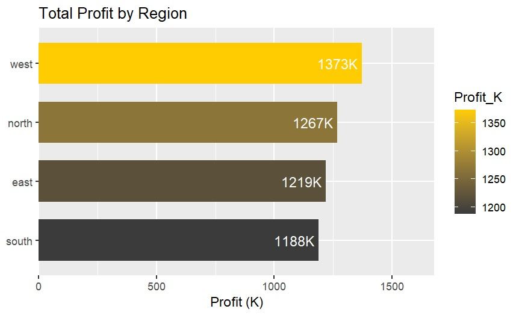
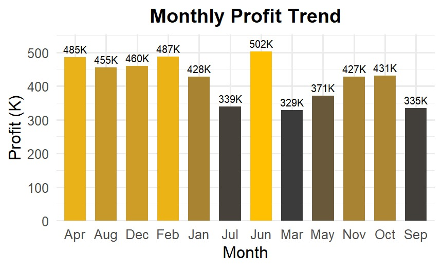
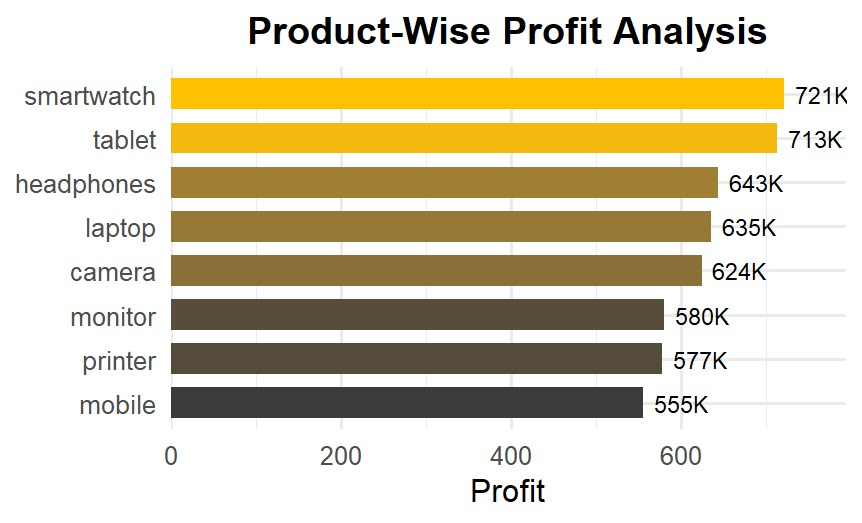

R/ggplot2 • Executive-ready visuals • Portfolio project
Total Unit Sold
4474
Total Revenue
4646.7K
Total Profit
1188.4K
I’m Ali Muhammad, a data visualization specialist focused on clear, reliable dashboards that turn raw data into actionable insights. This case study demonstrates sales performance analysis across time, region, category, and product. My approach is methodical: data is cleaned, validated, and structured before crafting visuals that balance clarity, accessibility, and business impact. The result is a polished, executive-ready dashboard that can be scaled or repurposed for real-world decision-making.
Chosen dataset includes Date, Product, Region, Category, Revenue, Profit (optional Vendor) to enable product-level, regional, and temporal analysis.
Left: Total Revenue by Product ranks SKUs by revenue. Right: Total Revenue by Region compares performance across west, north, east, and south.
Profit distribution by region. Use alongside revenue to calibrate territory strategy and margin goals.
Side-by-side panels for Electronics, Accessories, and Office; Electronics leads in both metrics.
Month-by-month profit with a June peak (~502K) and softer months around March–July.
Horizontal ranking highlights high-margin items (e.g., smartwatch, tablet) for pricing, bundling, and promotion strategy.
Data Cleaning
readxl, dplyr, lubridate
Data Analysis
dplyr (mutate, summarise, group_by)
Visualization
ggplot2, scales, coord_flip
Environment & Export
RStudio IDE; optional export via ggsave()
Includes data cleaning, aggregation logic, and chart specifications for reproducibility.